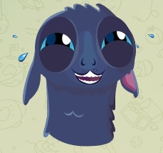

Мертвые боги
Первоисточник: ccastaneda.ru/viewtopic.php?id=2180&p=39#p75345
Вот, зашел поздравить ваших летунцов с 2-3-м февраля. А то потом точно забуду и не поздравлю.
Чужие не пройдут! Своих не бросаем! Мертвым героям - слова! А героиням - мороженое! Всем остальным - AVADA KEDAVRA!!!!1111
СЛОВА
Как-то раз, а может два, После дождичка в четверг "Воин", шею в плечи вжав, Зыркнув влево головой
И обратно тут же в миг Чтоб за этим не засек Из гнезда летун-другой В чьей-то голове чужой?
Где, конечно же, их рой "Видеть" он их хоть не мог, Но о том, насколько плох Средний человек любой
Воину без лишних слов Его орган чуть другой Стоило хотя бы вскользь Кто хоть быстро мимо шел
Но на миг пока открыт Воин вынужденно был Точка пятая его Сообщала, как другой
Летунами, бедный, вдоль Облеплён, и поперек. А иначе как вьяснить, Мощь с которой так бомбит?!
Жжеть и жалить попоболь. Сам-то воин, 2+2 "Несьедобный" будь здоров Трезвый с самого утра
Яки воды ручейка Что течет по льду из гор.
Значит всех кто глуп настоль Что не видя летуна
Под его "дуду" орет Что все это "ерунда". Ага, да да да, да да! Хахахахахахаха
Нервно засмеялся в нос Воин лишь подумав так. Ну так вот, конечно он Не увидел за плечом
Что-либо кроме плеча Как и сто раз до того. Но он и не ожидал. Он хотел лишь выполнять
Без "зачем" и "почему" Все, что "в голову" ему Отложилось со страниц Где "нагваль" их поместил. (Либо "первый" ученик)
Ведь весь "воинский народ", Трезвый, чистый и пустой, То есть как он сам, открыт И поэтому проблем
У таких же как и он Сразу же "чистым звеном" Безошибочно больных Чувственно по жизни зрит -
Нет сомнений в том, что дед Круче всех других undead И что ученик деда Не внес бреда от себя Ни с мизинец летунца. (А прележно все донес С точки Д до точки Х)
Те два dead превыше всех (Кто и в самом деле dead) Т.к. те, кто не герой Они все глупцы, ведь он
Сам, ведь знает, что Такой В точности, как и любой - Слаб, зашорен и труслив. Заражен и насквозь сгнив. Безнадежен и заблудш. Как любой живущий муж. И он в каждом видит ИХ!
Стоит лишь на краткий миг На другого бросить взгляд Не фиксируясь, а так Как от "чистого звена"
Через точки пятой залп (Получая Знаний в Мозг, Без вмешательства Ума) Что уже готов отчет Утешительный нисколь,
Где и сколько дыр в "другом", Сколько "впилось" летунов. И они "включить звено" Не дадут ему, хоть вой.
А раз так, то НАФИГА Что "другой" там пишет, знать? Свое "чистое звено" Под опасность подставлять,
Целой армии чужой Наглых, знающих - давно Донор сдулся и притих? Эти-ж звери как куснут,
(/"Кто здесь главный"/ Так потом не расцепишь Челюстей длиной с арбуз. Вот и жди, как "уползет", Пока в цирке Свет горит... И перформанс "этот мир" Главный клоун - это "ты".)
Хоть в "другом" все сожрано, Но стабильность есть зато - Хоть и мало, но всегда "Дома" есть у них "еда".
А теперь вопрос простой На съедобность летунам: Механизм, что узнает, Сортирует "этот мой"- "А вот этот, он чужой" Всех зверинушек, чей есть -
Что его тебе дает? И за сколько, ты ему Выдал право "как "звено"? Отвечать на мой вопрос, "Зная точно", что он - вздор?
И второй, контрольный в лоб Несъедобный как бревно: Сколько нужно таких лбов, Свить в из таких любов кольцо, Силой древних мастеров, По свиванию рогов Чтоб ты мог читать всерьез Без неужержимых слез Эти 5 логичных слов, И в конце их знак "вопрос", ВО ВСЕЛЕННОЙ, ГДЕ НЕТ ТОЛП, И ОДИН ЛИШЬ "КОКОН" - ТВОЙ?
...И ЛЕТУН ТОЖЕ ОДИН НО ОБ ЭТОМ В ДРУГОЙ РАЗ ПРОРВА НЕНАСЫТНЫХ РТОВ С КАЖДОЙ ДЫРКИ БАХРАМОЙ ВНИЗ СВИСАЮЩИХ, СЕЙЧАС МНЕ НЕ ДАСТ ПРОДОЛЖИТЬ ТО, ЧТО НА ВКУС ИМ СЛОВНО ПРАХ ПОРА ЗНАТЬ И ЧЕСТЬ ЗАКОН ГЛАВНЫМ СЛУЖАЩИЙ ВСЕЙ ТОЙ ХИЩНИКОВ ВСЕЛЕННОЙ: СМЫСЛ БЫТИЕ И МЕСТО "Я" ЭТО ЛИШЬ ЭХО ШАГОВ, ЧТО ТЫ ДЕЛАЕШЬ, ДАРЯ ЖИЗНЬ, А НЕ СЛОВА- ВЕДЬ ЛЮБОВЬ ВСЕГДА ЖИВА НО НИКАК НАОБОРОТ - ВСЕ ЧТО ЖИВО - В МИР УМРЕТ, А ЛЮБОВЬ БУДЕТ ЖИВА ПОКА ВВЫСЬ ЛЕТИТ МЕЧТА.
А ЛЮБОВЬ ДАРИТЬ МЕЧТОЙ - ЧТО НЕ СБУДЕТСЯ ВОВЕК - В ТОЧНОСТИ РОЛЬ "ЛЕТУНОВ", БЕЗ КОТОРОЙ [you] МЕРТВ, И НЕ СМОЖЕШЬ БЫТЬ РОЖДЕН ТАМ, ГДЕ ДАР ДАЕТ ОРЕЛ И НАГВАЛЕЙ "ДВА В ОДНОМ" ПОВТОРЯЮЩИХ РОТ В РОТ ЗА НИМ ТО, ЧТО С НИМИ ОН ДЛЯ ТОГО, ЧТОБЫ ДАР СВОЙ ДОХОДИЛ ДО ЖИВЫХ ПРОРВ ПРОИЗВОДИТ, СОЗДАЕТ, И ИСПЫТЫВАЕТ В ДЕЛЕ, С ТЕМИ, КТО :)